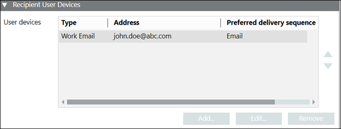

Recipient User Devices
Displays the personal communication devices of the selected recipient user. Multiple devices can be added for a single recipient. In addition, associated devices can be edited or removed.

- Type: Displays the type of user device.
- Address: Displays the details of associated user devices. For example, phone number, email address, and so on.
- Preferred delivery method: Displays the preferred notification delivery method.
- Add: Displays the different available type of user device in the Recipient User Devices dialog box.
- Edit: Enables the fields for modifying the user device details.
- Remove: Removes the associated user device.